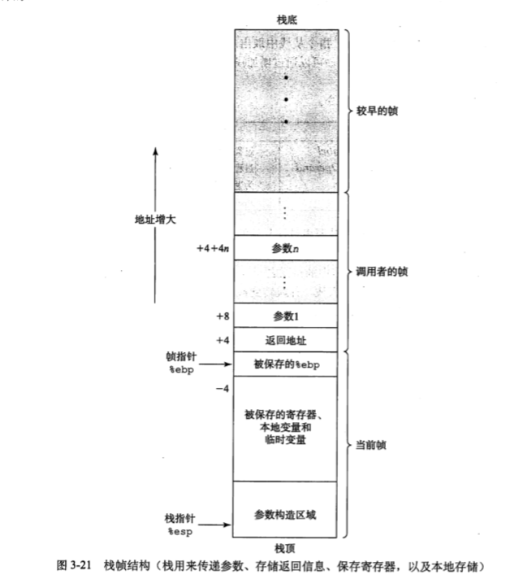
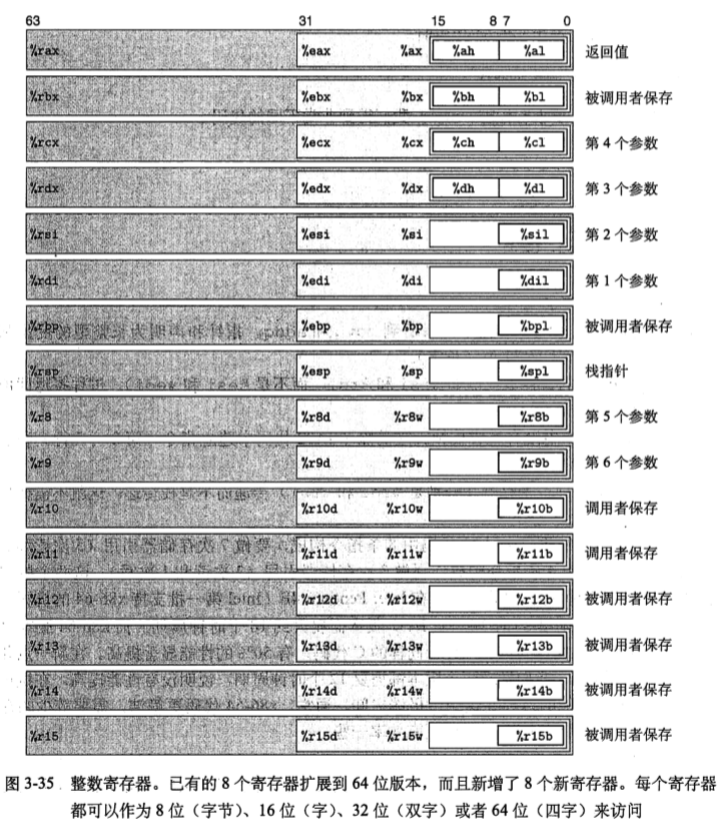

汇编代码后缀
| 名称 | 代码 | 大小 |
|---|---|---|
| char | b | 1个字节 |
| short | w | 2个字节 |
| int/long int/char* | l | 4个字节 |
| float | s | 4个字节 |
| double | l | 8个字节 |
| long double | t | 8/10/12个字节(根据系统) |
访问信息
寄存器是用来存储整数数据和指针的。
三种操作数指示符：
第一种：立即数 $
格式 $Imm 操作数值 Imm
第二种：寄存器 用E来表示寄存器，R[E]来表示它的值
格式 E 操作数值 R[E]
第三种：存储器 用M_b[Addr]来表示从Addr开始b个字节的引用
一般格式 Imm(E_b, E_l, s) 操作数值 M[Imm+R[E_b]+R[E_l]\dot s]
数据传送指令
mov
movb/movw/movl 传送字节/字/双字
movs 符号扩展
movsbw/movsbl/movswl
movz 零扩展
movzbw/movzbl/movzwl
pushl 双字压栈
popl 双字出栈
leal S D 加载有效地址 &S->D
和movl的区别在于leal赋值的是地址，movl赋值的是值
整数算术操作
| 操作 | 含义 |
|---|---|
| INC D | 加一 |
| DEC D | 减一 |
| NEG D | 取负 |
| NOT D | 取补 |
| ADD S, D | 相加 |
| SUB S, D | 相减 D-S |
| IMUL S, D | 相乘 |
| XOR S, D | 异或 |
| OR S, D | |
| AND S, D | |
| SAL k, D | 左移 D<<k |
| SHL k, D | 同上 |
| SAR k, D | 算术右移 D>>k （填上符号位），特别的，SAR D为SAR $1, D的简写 |
| SHR k, D | 逻辑右移 D>>k （填上0） |
特殊算术操作
imull S 有符号全64位乘法 S*R[%eax]->R[%edx]:R[%eax]
mull S 无符号全64位乘法 S*R[%eax]->R[%edx]:R[%eax]
cltd 转为四字 R[%eax]->R[%edx]:R[%eax]
idivl S 有符号除法 R[%edx]:R[%eax] mod S -> R[%edx]
R[%edx]:R[%eax] / S -> R[%eax]
divl S 无符号除法 同上
条件码
CF 进位 ZF 零 SF 负数 OF 补码溢出
只设置条件码而不改变目的寄存器的值
- CMP S2, S1 基于S1-S2
- TEST S2, S1 基于S1&S2
SET系列指令 操作条件码存储一个字节的存储器位置
跳转指令
无条件跳转 jmp
- jmp .L1 直接跳转
- jmp *%eax 间接跳转
条件跳转(只能是直接跳转）
| 指令 | 跳转条件 | 描述 |
|---|---|---|
| je/jz | ZF | 相等或零 |
| jne/jnz | ~ZF | |
| js | SF | 负数 |
| jns | ~SF | |
| jg/jnle | ~(SF^OF)&~ZF | 大于（有符号） |
| jge/jnl | ~(SF^OF) | 大于等于（有符号） |
| jl/jnge | SF^OF | 小于（有符号） |
| jle/jng | (SF^OF)|ZF | 小于等于（有符号） |
| ja/jnbe | ~CF&~ZF | 大于（无符号） |
| jae/jnb | ~CF | 大于等于（无符号） |
| jb/jnae | CF | 小于（无符号） |
| jbe/jna | CF|ZF | 小于等于（无符号） |
条件赋值
cmovl S, R 如果<，用S代替R
cmov系列指令和上面j系列相似
不是所有的条件表达式可以用条件传送来编译，因为代码会对then-expr和else-expr求值，如果有一个值不存在或者操作了全局变量，即使测试为假，也会导致错误
switch方法
在.rodata(Read-Only Data)里声明switch情况分配地址1
2
3
4
5.L7:
.long .L3
.long .L2
.long .L4
... ...
然后使用间接跳转1
jmp *.L7(, %eax, 4) # Goto *jt[index]
值得注意的是，当switch的case值不连续且跨度足够大的时候，会编译成multi-if的形式
有传闻显示，编译器还有二分区间这样的骚操作
程序栈
单个过程分配的那部分栈称为栈帧，最顶端以两个指针界定
%ebp为帧指针，%esp为栈指针，程序执行时，栈指针可以移动，一般相对于帧指针进行访问

转移控制指令
- call Label 过程调用
- call *Operand 过程调用
- leave 为返回准备栈
- ret 从过程调用中返回
call指令将控制转移到一个函数开始，ret指令返回到call指令之后的那条指令
leave指令将%esp移到%ebp然后弹出%ebp。如果函数要返回整数或指针的话，寄存器%eax可以用来返回值。
一个典型的过程调用示例

1 | caller: |
leave效果上等价于几个popl，但效率上更高
数组
声明方式：T A[N]
假设整型数组E存在%edx，整数索引i存在%ecx
| 表达式 | 类型 | 值 | 汇编代码 |
|---|---|---|---|
| E | int* | x_E | movl %edx, %eax |
| E[i] | int | M[x_E+4i] | movl (%edx,%ecx,4), %eax |
| &E[i] | int* | x_E+4i | leal (%edx, %ecx, 4), %eax |
异质数据结构
struct声明数据结构类型
union允许以多种类型引用一个对象->一般需要创建一个标签字段
数据对齐：要求short地址必须为2的倍数，int等地址必须为4的倍数
GDB
- 开始和停止：
- quit
- run
- kill
- 断点：
- break sum
- break *0x00000000
- delete 1
- 执行：
- stepi n 执行n条指令，默认1条
- nexti 以程序为单位执行
- continue
- finish
- 检查代码（反汇编）：
- disas
- disas sum
- disas 0x00000000 反汇编地址附近的函数
- disas 0x00000000 0x000000ff
- 检查数值
- print $eax（十进制）
- print /x $eax(十六进制)
- print (int )($ebp+8) 输出%ebp+8处的整数
- 有用的信息
- info frame 当前栈帧
- info registers 所有寄存器
保护机制
- 栈随机化
- 栈保护
- 限制存储可执行代码的存储器
64位
指针和声明为长整型的变量都是64位，用movq和addq代替movl和addl
相应的运算和控制也要加上q
返回值放在寄存器%rax中
许多函数没有生成栈帧，通过寄存器传递参数，参数传递见下表
| 操作数大小 | 1 | 2 | 3 | 4 | 5 | 6 |
|---|---|---|---|---|---|---|
| 64 | %rdi | %rsi | %rdx | %rcx | %r8 | %r9 |
| 32 | %edi | %esi | %edx | %ecx | %r8d | %r9d |
| 16 | %di | %si | %dx | %cx | %r8w | %r9w |
| 8 | %dil | %sil | %dl | %cl | %r8b | %r9b |
需要帧栈的情况如下
- 局部变量太多
- 局部变量是数组或结构
- 用&计算局部变量地址
- 需要传递栈上的参数
- 需要保存它的状态
此时x86-64一般会在过程开始后固定栈指针%rsp，并通过栈指针访问
相比之下，x86-64的代码比IA32更简洁且需要较少存储器访问

16个通用目的寄存器中，6个用来传递参数（%rdi,%rsi,%rdx,%rcx,%r8,%r9），6个被调用者保存的临时寄存器（%rbx,%rbp,%r12~%r15)，1个保存返回值(%rax)，1个栈指针(%rsp)，剩下的是调用者保存的寄存器（%r10,%r11）
由于没有帧指针寄存器，可以用寄存器%rbp作为通用寄存器
跳转到ret前会加rep作为空操作（使处理器适当预测ret目的以加速）